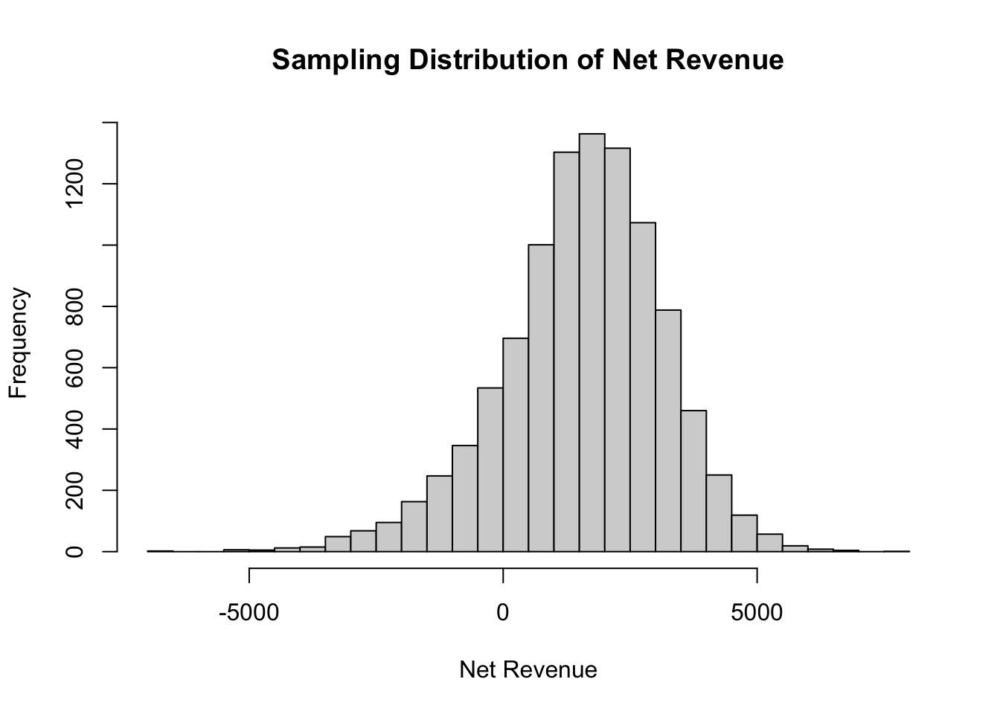

Risk and uncertainty are related, but different than each other. Risk is something that someone bears. Risk is the outcome of uncertainty. Once you have an uncertain event and you can put some distribution to it, you can measure the risk associated with that event.
Just because there is uncertainty, there could very well be no risk: Flipping a coin with no care for the outcome.
1.1 Levels of Uncertainty
The known: Guaranteed event
The unknown: Events that carry risk that will be reduced / eliminated over time as the event gets closer.
The unknowable: Events that carry risk that may not change over time as the event gets closer.
1.2 Problems with Point Estimates
Figure 1: Point Estimates
2 Dealing with Risk
2.1 Scenario Analysis
People started accounting for possible extreme values (variability) in their estimation of some of the inputs.
Figure 2: Scenario Analysis 1
Figure 2 shows a simple scenario analysis by accounting for three different outcomes. Outcomes are too variable in this type of analysis and it doesn’t account for interdependencies.
An extension to this is tornado analysis where you look at the best and worst case scenarios for each of the inputs and look at the highest impact for every input. Find which input impacts us the most.
Figure 3: Tornado Chart
Sensitivity analysis captures marginal costs by analyzing things like “What will happen if fixed costs increase by $1?” This is great at capturing sensitivities in our inputs.
2.2 Simulation Approach
Monte Carlo simulation allows us to account for all of the possible changes in all our input variables and the possible correlations between them. The final output is a probability distribution of all possible outcomes.
Code
library(triangle)n_sim <-10000units <-rtriangle(n_sim, a =500, b =2000, c =1500)var_cost <-1+0.004* units +rnorm(n_sim, mean =0, sd =sqrt(0.8))fixed_cost <-2500price <-rtriangle(n_sim, a =8, b =11, c =10)net_revenue <- (price - var_cost) * units - fixed_costhist(net_revenue, breaks =50, main ="Sampling Distribution of Net Revenue", xlab ="Net Revenue")

A parametric Monte Carlo simulation requires specific distributional parameters before a simulation can begin. A nonparametric Monte Carlo simulation uses raw historical data to estimate the distribution and no distributional parameters are required for the simulation to run.
3 Key Risk Measures
Risk is an uncertainty that affects a system in an unknown fashion and brings great fluctuation in value and outcome. Risk is the outcome of uncertainty and fluctations can be measured in a probabilistic sense.
Risk has a time horizon. Risk measurement has to be set against a benchmark.
3.1 Statistics of Risk
Variance
Skewness
Kurtosis (catastrophic, extreme tail events)
3.2 Common Risk Measures
Probability of Occurrence: Probability of failure of a project, probabilty of default, migration probabilities.
Standard Deviation / Variance / Coefficient of Variation: Two-sided measures, sufficient only under normality or maybe symmetry.
Semi-standard Deviation: Measure of dispersion for the values falling below the mean.
Value at Risk (VaR): The amount of money at risk given a particular time period at a particular probability of loss.
1 year 99.9% VaR is $10,000
There is a 99.9% chance you will lose at least $10,000 in 1 year
Expected Shortfall (ES): Average amount you will lose in the worst case scenarios.
1 year 99.9% ES is $15,000
In the worst 0.1% of scenarios, the average amount of money you will lose in one year is $15,000.
3.3 Value at Risk (VaR)
The VaR calculation is aimed at making a statement of the following form: We are 99% certain that we will not lose more than $10,000 in the next 3 days.
VaR is the maximum amount at risk to be list over a period of time at a particular level of confidence. This measure is associated with a percentile (quantile) of a distribution.
Figure 4: Visualizing VaR - Right Tail
Main steps:
Identify the variable of interest (asset value, portfolio value, credit losses, insurance claims, etc.).
Identify the key risk factors that impact the variable of interest (assets prices, interest rates, duration, volatility, default probabilities, etc.).
Perform deviations in the risk factors to calculate the impact in the variable of interest.
3.4 Expected Shortfall
One drawback of VaR is that it ignores the distribution of a portfolio’s return beyond its VaR.
Example: The 99.9% VaR for an investment in stock A is $100k. The 99.9% VaR for an investment in stock B is $100K. For Stock A, the loss can be up to $250K and for Stock B the loss canb e up to $950K. The quantiles can be the same, but the shapes of the distributions can be very different and VaR ignores the magnitude of the worst returns beyond the quantile point.
Another drawback is that VaR may not capture diversification under non-normality. VaR fails to satisfy the subadditivity property:
\[
Risk(A + B) \leq Risk(A) + Risk(B)
\]
The VaR of a portfolio with two securities may be larger than the sum of the VaR’s of the securities in the portfolio.
The Conditional Value at Risk (CVaR) or Expected Shortfall (ES) is a measure that doesn’t have the two drawbacks of VaR. Given a confidence level and a time horizon, a portfolio’s CVaR is the expected loss one suffer given that a “bad” event occurs.
Figure 5: Visualizing CVaR (ES) - Left Tail
4 Calculating Returns
There are 2 main methods for calculating returns:
Arithmetic return
Geometric return
4.1 Basic Notation
Return (\(r_t\)): Return at a period \(t\) (holding an asset from period \(t - 1\) to period \(t\))
Price (\(P_t\)): Price at a given time period \(t\)
Lag Price (\(P_{t-1}\)): Price at time period \(t - 1\)
Dividend (\(D_t\)): Dividend payment at time period \(t\)
For small time periods, we typically ignore dividend.
If \(r_1 = 5\%\) and \(r_2 = -5\%\), what is the total return of the two days? It’s not zero because a percentage of an increased number does not give back the same absolute amount at the original price.
With arithmetic returns, we have to multiply individual returns with the specific timeframe. However, with geometric returns we would just have to sum up the returns themselves.
5 Estimation and CI for Value at Risk and Expected Shortfall
Recall that there are 3 main approaches to VaR estimation:
Delta-Normal or Variance-Covariance Approach
Historical Simulation (variety of approaches)
Monte Carlo Simulation
5.1 Delta-Normal Approach
Suppose the that value, \(V\), of an asset is a functino of a Normally distributed risk factor, \(RF\).
\[
V = \beta_0 + \beta_1RF
\]
If \(RF\) is normally distributed, then \(V\) would be as well. What is the 2.5% VaR on any Normal distribution?
Figure 6: Normal Distribution
Remember that the VaR is just a quantile at a certain time interval. If the relationship is Normal, then we’re just getting quantiles from a Normal distribution.
5.1.1 Non-Linear Relationships
\[
V = \beta_0 + \beta_1RF^2
\]
Finding the extreme of a Normally distributed value and squaring that does not equal the extreme value for the squared risk factor.
Figure 7: Delta Example
Small changes of the risk factor result in small changes of the value–approximate this using the slope (derivative).
However, the Delta-Normal approach assumes that only the first derivative is actually important.
\[
dV = \frac{\partial V}{\partial RF}\vert_{RF_0} \cdot dRF
\]
\[
\Delta V = \delta_0 \cdot \Delta RF
\]
Change in value of the portfolio is a constant (\(\delta_0\)) times the change in the risk factor.
What is the distribution of the change in \(RF\)?
\[
\Delta RF = RF_t - RF_{t-1}
\]
Difference of Normal distributions is also a Normal distribution. Therefore, the change in \(V\), \(\Delta V\) also follows a Normal distribution.
The worst loss for \(V\) is attained for an extreme value of \(RF\). \(RF\) is Normally distributed, so use the standard deviation of \(RF\) and an \(\alpha\) level to calculate the VaR of \(V\).
5.1.2 Example
Suppose that the variable of interest is a portfolio consisting of \(N\) units in a certain stock, \(S\).
The price of the stock at time \(t\) is denoted by \(P_t\).
Value of the portfolio: \(N \cdot P_t\). Change in the portfolio value is \(N \cdot \Delta P_t\).
Assume that the price of the stock is a random walk:
\[
P_t = P_{t-1} + \epsilon_t
\]
Figure 8: Variance-Covariance
Figure 9: Two Position Example 1
Figure 10: Two Position Example 2
Note that in Figure 9, \(\text{Cov}(X, Y) = \text{Corr}(X, Y) \cdot \sigma_x \cdot \sigma_y\). Correlation of returns is 2